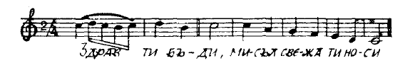

Беседа 2043 от 3877 · Беинса Дуно
Обикновена и необикновена мисъл
Размишление
Каква е разликата между обикновената и необикновената мисъл? Понеже мисълта може да се уподоби на умствено хранене, мога да ви запитам: Каква е разликата между обикновеното и необикновеното ядене? В необикновеното ядене турят неща, които в обикновеното не турят. Каква придобивка имате от обикновеното ядене и каква – от необикновеното?
Често вие говорите за вашето разбиране като за мярка. Това не може да бъде. – Защо? – Защото обикновеното разбиране не може да бъде мярка на нещата. Под „мярка“ разбирам постоянното в човека, което никога не се мени. Това е постоянната точка, постоянното място, от което можем да се ориентираме. Такива точки са, например, полюсите, както и екваторът. Колко екватора има земята? – Един. – Колко полюса? – Два. – Защо няма два екватора? Много просто, има два полюса. Те са два, а екваторът – един. Що е екваторът? На какво е граница? Екваторът е съединителна линия, дето се уравновесяват енергиите на земята. Той е място, дето енергиите най-много бушуват. Всички престъпления, всички добри неща стават на екватора. Значи доброто и злото стават на екватора. Там се намират най-свирепите животни, отровните змии. Търсите ли доброто и злото, ще ги намерите на екватора. Значи екваторът е зона, дето се уравновесяват енергиите. Съвременните хора не са господари на екватора. Сегашната култура се развива на умерения пояс. Тя не е култура на екватора. Колко далеч сме от екватора? – София се намира на 42 градуса северна широчина. Ти имаш отношение към екватора, ако го разбираш. Восъкът, поставен в тропическа област, веднага се стопява. Така и някои от вашите мисли изгубват своето състояние. – Защо? – Температурата, при която се проявяват, е висока.
Като говоря за екватора и полюсите, искам да ви обърна вниманието към вашия вътрешен живот. Вие още не познавате този живот. Хората се раждат и умират, без да разберат своя живот. Те минават през различни състояния – приятни и неприятни. Идеалът на хората е да забогатеят. Те мислят, че ще отидат в онзи свят, фантазират си, но как става това, не знаят. Все пак знаете нещо, но то е толкова малко, че не ви задоволява. Има две неща, за които хората са невежи, а именно: никога не могат да си представят абсолютно малкото, нито абсолютно голямото. Те са две величини, за които нямаме понятие. За тях имаме някаква представа, но какво са всъщност, не знаем. Казваме, че слънцето е много голямо, а го виждаме малко. Ние го виждаме милиони пъти по-малко. Микробата, която с просто око не се вижда, за да я видим, трябва да се гледа под микроскоп. Защо слънцето, толкова голямо тяло, ни се вижда толкова малко? Аз не искам вие да разрешите този въпрос. И най-великите философи не могат да го разрешат. Радвайте се, че и най-големите философи и адепти, в случая, са невежи като вас. И те нищо не знаят по този въпрос. – Защо да не знаят? – Ами защо трябва да го знаят? Да допуснем, че ти знаеш колко пари има един банкер. Какво придобиваш, ако знаеш точно колко пари има той в банката? Ти се интересуваш от това, защото искаш да вземеш пари от него. Интересуваш се от някой извор на планината. – Защо се интересуваш? Защото искаш да вземеш нещо от него. Ако нямаш отношение към извора, нямаше да се интересуваш от него. Ако ние се интересуваме от известна област или от известен предмет, то е, защото сме заинтересовани от него. Не мисли, че ако се интересуваш от нещо, е користолюбие.
Казваш: „Трябва да се говори Истината, заинтересован съм от нея“. – Що е Истина? – Никой не знае какво е Истината. Ние знаем само едно: Дето се яви Истината, тя всякога освобождава. Тя освобождава и човека. Защо го освобождава, не знаем. Обаче дето влезе Истината, тя внася ред и порядък навсякъде. Какво нещо е Любовта, също не знаем. Ние познаваме едно качество на Любовта: Дето се яви тя, явява се и животът и носи нещо хубаво и приятно.
Вие разполагате с малко знания и от тях искате да придобиете много. Това е задача с много неизвестни, каквито математиците решават. Например, един учен математик иска да съгради нещо. Първо, той си прави сметка колко материал ще му трябва и колко пари. Това са три неизвестни: x, y, z. Ако той не реши неизвестните и не ги тури на място, не би се занимавал с тази задача. Когато казваме, че мислим върху даден въпрос, ние сме заинтересовани. Казваш, че от нищо не се интересуваш. – Как не се интересуваш? Като ставаш от сън, ти се интересуваш от яденето. И друг казва, че от нищо не се интересува, а търси пари. Трети се интересува от религиозни въпроси. Защо му са тези въпроси? Защо се интересува от тях? За да научи що е Господ, що е рай. Като умре, да знае тези неща. – Щял да умре! Той говори за неща, които не знае. Какво нещо е смъртта, не знае, а за смъртта говори. Знае какво е да живееш, а не знае какво значи да умреш. Спряло му сърцето! Умряла ли е воденицата, като спре? Така не се разсъждава. Като спре сърцето, казвате: „Свърши се всичко“. Воденицата спряла. Пуснете вода, и воденицата ще започне да работи, да мели брашно.
Да говориш за живота и за смъртта, без да знаеш какво са те, това са приказки от „1001 нощ“. Така и в някой роман авторът изнася живота на своя герой, поставя го в различни положения: той се мъчи, страда. Авторът взима един престъпник, като Жан Валжан, описва живота му, поставя го на различни изпитания, докато в него се яви желание да не върши вече престъпления, да тръгне в правия път. Друг автор пък ще вземе за герой някое малко дете, което иска да стане велик човек – музикант, художник. Като четеш романа, в тебе се явява желание да станеш като героя на този роман. Щом се роди човек на земята, природата има някаква цел. Щом те викат на гости, каква цел имат? – Да те угостят. Защо те викат на театър? Да видиш една пиеса. Защо те викат на църква? – Да чуеш една служба, или проповед.
Сега ще изнеса един практически пример. Представете си, че всеки от вас носи по едно въже. – Защо му е въжето? – Трябва му за нещо. С въжето ще извадиш вода от кладенеца. Ще вържеш кофата с него и ще я изтеглиш. Минаваш през реката с кон, който водиш за въжето. – Какво трябва да бъде въжето? – Здраво. Ако не е здраво, ще издържи ли кофата, като я пущаш в кладенеца? Ако въжето не е здраво, като се дърпа конят, то ще се скъса. Вашият идеал уподобявам на въжето. Ако при усилията ви за постигане на вашия идеал се скъса въжето, какво ви ползва то? Идеалът не трябва да се къса.
Защо се учи човек? Ще кажете, че човек се учи, за да изкарва по-лесно прехраната си. – Каква е целта на сегашното учение? – Посвещението. То ще дойде отпосле. – Кога се посвещава човек? – Когато се научи да се въздържа. Не можеш да посветиш един човек, който обича да яде. Как ще го посвещаваш? Той казва: „Дай ми ядене! Не ми трябва посвещение. Като се нахраня добре, ще ти кажа какво е яденето, дали е добре сготвено“. Аз оставям този човек пред хубавото ядене, да се нахрани добре и да усети тежест. Той ще каже: „Хубаво беше яденето, но тежко ми стана“. Аз зная, че след това той ще започне да мисли. Какво ще мисли? – Че трябвало да яде по-малко.
Викат те някъде, предлагат ти злато и казват: „Вземи си, колкото ти трябва“. Ти едва можеш да носиш 20 килограма товар на гърба си, но понеже си лаком, взимаш 40 килограма. Мислиш си, че ще намериш някой да ти носи товара срещу известно възнаграждение. Закон е: Нямаш право да търсиш хора, които да носят твоя товар. Сам ще го носиш. Има един свят, дето срещу никакво възнаграждение не можеш да пренесеш товара си от едно място на друго. Да носи друг твоя товар, такова нещо в природата не съществува. Яденето е мярка. Ако аз ям и ти ядеш, кой от двамата ще се ползва от яденето? Никой не може да свърши работата на другите. Има една работа, която всеки сам трябва да свърши. Пръв ти се ползваш от резултата на работата. Другите се ползват косвено. Дръжте в ума си следната мисъл: Сегашните ви възгледи трябва да се преобразят, но това не става с една лекция, нито в един ден, нито в един месец, нито в една година, нито в един живот. Обаче има една практическа страна в живота, тя е следната: Ако окото ти се напраши, прахът трябва да излезе. Остане ли в окото, ще ти причини ред пакости. Това не става изведнъж, а постепенно. Вървиш по пътя, закриваш окото си, но може да паднеш и да си счупиш крака. Като се занимаваш с окото си, можеш да се спънеш и да си напакостиш. Ето защо, спри се на пътя, докато изчистиш окото си. По кой начин може да извадиш праха от очите си? Всички имате такъв прах. Често се прашат очите на човека. Ставаш сутрин от сън неразположен. Това е прахът в очите ти. Казваш: „Днес не ми се работи, не ми се учи, не съм разположен“. – Прах има в окото ти. Щом си неразположен, ти търкаш очите си. – Прах има в тях. Ако извадиш праха, лесно ще смениш състоянието си. Ако не можеш да го извадиш, ще мислиш как да се освободиш от него. Ти не можеш да медитираш. Медитацията е съвсем различно нещо от мисълта. Човек мисли по нямане на работа. Но той медитира, защото е нужно това. Намерете положителната страна на медитирането, а също и на мисълта. Като мисли, човек трябва да бъде безкористен. Като мисли за Бога, трябва да се освободи от користолюбието. Всъщност човек мисли за Бога, за да придобие нещо. Така мисли и за баща си. Защо търсиш Бога? Защо търсиш майка си и баща си? Защо търсиш учителя си? Безкористно ли е това? Под „безкористие“ разбирам, когато отношението на нашата мисъл към живите същества е незаинтересована. Когато мисълта е крива, тогава никакво отношение не съществува. Не че мисълта, сама по себе си, не е права. Например, отиваш при една чешма, имаш желание да се запознаеш с нея, т.е. да си налееш вода. Има ли нещо криво в тази мисъл? Като си наливаш вода, ти искаш да извадиш крана на чешмата, или да разрушиш формата ѝ. Там е лошото, там е твоята крива мисъл. Че си взел един или повече литри вода, това не е лошо. В това няма никакво престъпление. Цял ден поемаш въздух, употребяваш го за нещо. Има ли в това някакво престъпление? Това са теоретични работи. Казваш, че не можеш да пееш. – Можеш да пееш, но трябва да се опиташ. Човек може всякога да пее. Ако искаш да те назначат учител по музика или пеене, трябва да бъдеш готов всякога да пееш или да свириш. За всички има работа.
Кое е същественото в живота? Знайте, че вие идете от един свят, който сте забравили. Отношенията в този свят са постоянни. Вие сте взели известно задължение: да свършите една работа на земята и като се върнете, да докладвате горе какво сте свършили. Обаче като сте дошли тук, вие сте се предали на ядене и пиене и сте забравили задължението си. Вие сте загубили бележките си и сега се намирате в чудо. Забравили сте защо сте дошли. Че сте дошли, знаете, но защо и за какво, не знаете. Нито един от вас не знае защо е дошъл. Може ли да си спомните защо сте дошли? Някои ще кажат, че са дошли да живеят, други – да учат. Ако не знаете, по-добре мълчете. А може и да пеете. Сега ще пеем. За да не губим времето, ще пеем. (Учителят свири.) Какъв е този тон? (– „Ла.“) – Вземете този тон. (Учителят свири и пее: „Ставай рано, не дреми и не се потривай“.) Кажете ми три думи в поетична форма. Да вземем изречението: „Здрав ти бъди!“ Здравето има високи вибрации.

Според сегашните ви понятия, мисълта свежа трябва да бъде по-високо, но като се пее, постепенно слиза. За да бъде мисълта свежа, трябва да вървиш нагоре. Тогава мисълта ще бъде свежа, без да искаш. Като слизаш надолу, за да запазиш същото състояние, мисълта ти трябва да бъде свежа. Нагоре, това е естествено. Изгубиш ли свежестта си, иде слизането. Кое е по-добре: да държиш свежа мисъл, или да носиш свежа мисъл? Ако вървиш умерено, образува се магнетично състояние. Ако непрекъснато вървиш, изпадаш в хипнотично състояние. За да се освободиш от него, трябва да измениш посоката на движението. При това състояние образува се дисонанс. Той е необходим, за да се измени посоката на движението. Без него посоката не може да се измени. Пеенето е форма, която изменя енергиите и дава нова насока. Цигуларят, като свири, трябва да знае как да изменя теченията в природата. Без да знае, той дава насока. Някога пееш една и съща песен. Това е еднообразие, което причинява страдания. Никога не подържай страданието! Сърби те някъде, и ти се почесваш. Не се почесвай много пъти. Можеш да се почешеш най-много три пъти. След това промени мястото.
И тъй, не се задържайте дълго време в едно и също състояние, защото ще си причините неприятности. Казвате за нещо: „Тази работа няма да я бъде!“ Като кажеш така три пъти, повече не я повтяряй. Ако една работа не става по един начин, никой не те заставя да стоиш на същото място. Иди на друго място, промени начина. Искаш да вдигнеш един камък. Мъчиш се, пъшкаш, не можеш. Промени мястото, иди на друга страна, и оттам го вдигай. Ако намериш удобно място, не търси друго, оттам вдигай камъка. В природата има доста камъни. Дето можеш да извадиш един камък, там стой. Приложете този закон във вашия ум, понеже всеки ден имате неуспехи. Малкото дете се сърди на майка си, плаче. Тя дойде при него, погали го. То не иска да го милва, не иска нищо да чува. Майката знае слабото му място. То иска ябълка. Като му покаже една ябълка, то си отваря очите. Като му покаже 2–3 ябълки, то се усмихва. Ябълка трябва на детето. Колкото да е малко, то дава вид, че нищо не иска. Щом види ябълките, веднага отстъпва. Прегръща майка си, и въпросът се свършва. И ние сме такива малки деца в живота. Ти се сърдиш и каквото си взел, не искаш да го дадеш. Казваш: „Защо да го дам?“ – Ще го дадеш! Правилни отношения ще имаш. Казваш за себе си: „Аз никога няма да направя така“. – Не казвай, че няма да го направиш. Под „няма да направя това“ разбираме, че няма да го направиш в изопачена форма, но ще го направиш, както природата изисква. Ще поемаш въздуха и ще го изпущаш. Такива два процеса има и в мисълта. Възприемеш една мисъл, обработиш я и после я изпращаш в пространството. От 100 мисли една ще задържиш за себе си, а 99 ще пуснеш в пространството. Вие, като приемете една мисъл, увлечете се в нея и там оставате. Забравяте, че имате още 99, които трябва да изпратите в пространството. Там е вашата грешка.
Хвани една мисъл, пусни я да си върви; хвани втора, трета, пусни и тях. Като дойде стотната, задръж я. Всяка мисъл, която минава през тебе, не е твоя. Една е твоята мисъл, нея ще задържиш. Как ще я познаеш? Имаш известно състояние, известна мъчнотия. Мислиш по един, втори, трети начин. През тебе минават много мисли. Това са 99-те мисли. Като дойде последната, твоята мисъл, светне нещо в ума ти и казваш: „Разбрах тази работа“. Тази мисъл, която разрешава въпроса, е твоята. После, изпаднеш в друго противоречие и пак минаваш през същия процес. Онази мисъл, която ще разреши в тебе второто противоречие, не е същата. Някога мислиш какво да кажеш на човека. – Зависи какъв човек ще срещнеш. На болния ще кажеш да пее. Здравият, и без да му кажеш, пее. Ако болният не пее, ще влоши състоянието си. Той трябва да пее, за да оздравее. – „Защо трябва да пея?“ – За да не умреш, да не осиромашееш, да не станеш невежа. Следователно избери си една дума и я пей. Казваш за нещо, че няма да го бъде. Кажи: „Ще го бъде!“ Кажи и пей тези думи. На всяка отрицателна мисъл ще поставиш положителна. Процесите в природата не са механични. Вижте как се гради къща. Може ли с един удар на чука да съградиш къща? Също така и с една мисъл не можеш да постигнеш желанието си. Една мисъл и един удар не разрешават въпросите. Усилия са нужни! – Как ще постигна желанието си? – Ще намериш начин. Кажи три пъти: „Ще го бъде!“ (Учителят пее: „Ще бъде тъй, както аз не зная“.) – „Ама беден съм.“ – И при беднотията ще го бъде. – „Болен съм.“ – И при болестта ще го бъде. – Кога? – Когато му дойде времето. – Де е вашата погрешка? – В бързането. Ще го бъде, когато му дойде времето. Вие очаквате да стане утре. То е днес, откак изгрее слънцето, докато залезе. Ще го бъде, от изгрева на слънцето, докато залезе. Щом отлагаш за другия ден, мисълта се изменя. Ти не вървиш вече в правия път. Кажи: „Още днес ще го бъде. Днес мога да стана философ. Днес мога да напиша това, което мисля“. Чудни сте! Не е въпрос да напиша една книга; важно е тя да мине през мисълта ми. Това е написване. Написал съм я, но не съм я превел, т.е. сложил на книга. Да напишеш нещо на книга, това значи да го преведеш. В един ден можеш да го напишеш, но ще ти отнеме 10 години, докато го преведеш. Всеки философ пише за един ден, а превежда с години. Материалът на мисълта трябва да се преведе.
Мнозина искат да имат успех в живота си, но още си служат със старите методи. Те искат да бъдат силни, да учудят света със своята сила. За да проявят такава сила, те трябва да са подготвили тялото си. То е все едно, искаш някой да ти говори, а ти си неразположен. Следователно невъзможно е да бъдеш силен при слабо тяло. Същото е за разположението. Окалял те някой и след това иска да ти говори нещо, да те морализира. Каквото да ти говори, ти постоянно ще мислиш за калта, как да се очистиш. Друг е въпросът, ако дойде някой и започне да те чисти. Той те чисти и ти говори. Ти си готов да го слушаш, защото виждаш желанието му да те очисти. След това ставаш весел, разположен, готов да слушаш този човек. Учете се лесно да сменяте състоянията си, защото успехът ви зависи от доброто разположение на духа. Имаш известен недъг, но си работник, от тебе искат да свършиш някаква работа. Ти работиш и постоянно мислиш за своя недъг. Ставаш нервен, сърдит и вместо да задоволиш господаря си, ти го настройваш против себе си. Какво печелиш от това? Твоят недъг е калта, която виждаш на дрехата си. Не се сърди на никого, но я изчисти. Защо не си помогнеш сам? Че някой те нарекъл невежа, ти се сърдиш и на всички разказваш за това. Не се сърди на този човек, но си кажи: „Днес съм невежа, утре ще стана учен. Имам всички условия да уча и да придобия знания“.
Казвам: Когато някой ви обиди, не се оплаквайте на другите, не разнасяйте калта вън от вас. Обидата е кал, която всеки сам трябва да изчисти. Някой ти ударил две плесници – не говори на никого за това. Един зъболекар лекувал болните си с бой. Като дойде болният, той му удрял три плесници и му казвал: „Хайде, върви си!“ Болният се чуди какъв е този лекар, но като излезе вън, вижда, че болката изчезнала и челюстта му наместена. Питам: Ако трите плесници наместват челюста на болния, не са ли на място? Ти седиш, мислиш, че си учен, че много знаеш и нищо не работиш. Дойде някой при тебе и ти казва: „Голям простак си ти“. Веднага скачаш от мястото си и казваш: „Аз ще ти дам да разбереш кой е простак, аз или ти!“ Започваш да мислиш, да учиш, искаш да му докажеш, че не си прост човек. Какво направи този човек? Той те удари три пъти, и ударът дойде на място – оправи кривата ти мисъл. Като знаете това, приемайте ударите с благодарност. Всички удари, които съдбата налага на човека, са на място. Те изправят нещо изкривено в него. Казваш: „Нещастен съм, светъл ден не съм видял в живота си“. Това е хипербола, от която трябва да се освободиш. Слънцето всеки ден изгрява, а ти казваш, че не си видял светъл ден. Това не е верно.
Какво заключение ще извадите от всичко казано досега? Искам вие сами да извадите заключението. Много естествено, аз съм напълнил торбата ви, и вие трябва сами да я вдигнете. Ако я вдигна аз, тя е за мене.
Дръжте в ума си следните правила: Живот без Любов е живот на великите несрети. Живот без знание е живот на великите изненади. Живот без Истина и свобода е живот на великите ограничения.
От днес ще имате ваканция за 1–2 месеца. През това време извадете всички правила и по-важни мисли от лекциите, които съм ви говорил през годината. Като работите по този начин, вие ще придобиете вътрешното, истинското знание.
Само светлият път на Мъдростта води към Истината. В Истината е скрит животът.
Лекция от Учителя, държана на 28 юли 1933 г. в София, Изгрев.